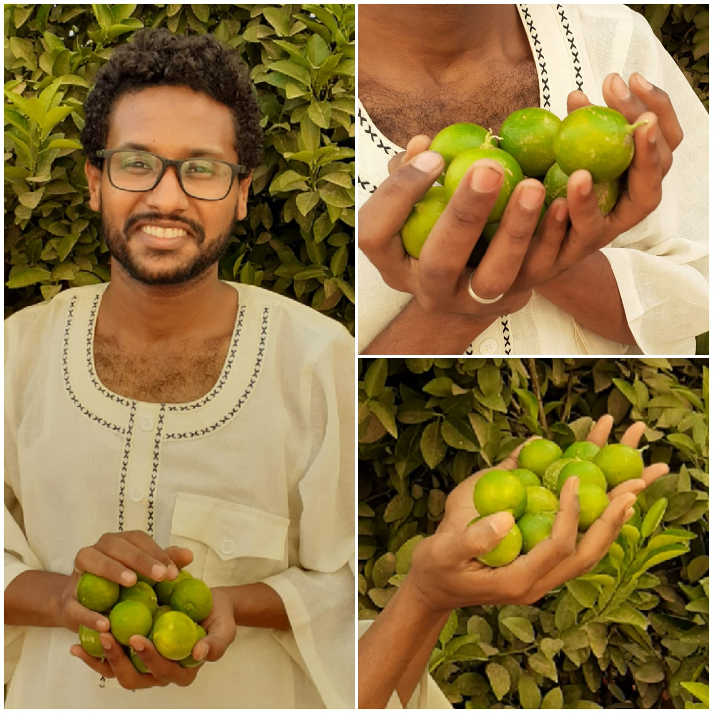

ليمون بيتنا 🍃 = قروشنا 💰
✍️ شرفنتود | 21 شوال 1441هـ | 13-6-2020م
(القروش) هي اكبر خدعة تسيطر بها الرأسمالية المتوحشة و الحكومات ع الشعوب وتبتزنا بها !!
الفايدة شنو من (المليار دولار) اذا الحاجة العاوز تشتريها بي (2 مليار دولار) ؟!
صح ممكن تعمل قلبة قلبتين بالمليار المعاك وتتمو,, دة طبعاً بافتراض سعر السوق حيكون راجي حلاتك !!!
طيب إذا تعبت و اجتهدت لميت الـ (2 مليار دولار) لكن الحاجة العاوز تشتريها من السوق انتهت او هي أصلاً مافي ؟!!
هنا حتقعد تغني كمال ترباس : (ياريت وياريت ويااااااريييت) 😅😂
فلسفة القروش هي أصلاً مجرد (وسيط للتبادل) يعني لمن يكون (عندي ليمون) وانا (عاوز عيش) بدل ما افتش زول (عاوز ليمون) وفي نفس الوقت (عندو عيش), نحن البشر فكرنا بدل اللفة الطويلة دي نعمل وسيط سميناهو (قروش) ممكن نبدل بيه أي حاجة بس بشرط يكون عندك حاجة تانية مقابل (قروشك) دي نبدلها معاك (توازن السوق),, يعني (القروش) الفي جيبك المفترض يكون عندك (عيش) مقابلها عشان يكون عندها قيمة ومن اجلها تستحق اتنازل ليك عن (الليمون) الفي يدي دة !!
النقطة الفوق اكاديمية بحتة حاولت ابسطها بقدر الإمكان وهي بتنطبق علي كل المستويات ابتداءً منك مروراً بحلتكم وبلدك والعالم كلو . .
يلا هسي حيجي سؤال في بالك : (ليه مرات بكون ما عندي اي حاجة وبرضو بقدر ابدل بالقروش المعاي حاجات تانية؟!)
سؤالك منطقي جداً وواقعي ودة بسبب وفرة الإنتاج العملتو الرأسمالية وهو انتاج ابرز سماتو متمركز عند افراد او دول (قِلة) عشان كدة ديل قروشهم بقولوا عليها قوية لأنو عندهم حاجات مقابلها (اتذكر مثال الليمون) وعشان انت ما عندك حاجات مقابل قروشك الكتيرة دي عشان كدة بقولوا عملتك ضعيفة !!! - يمكن كدة يادوب حنفهم ليه الخبراء بعتبروا (زيادة المرتبات / الكتلة النقدية) حل خاطئ وممكن يكون كارثي في ظل عدم الإصلاحات الجزرية للإقتصاد (زيادة وتثوير الإنتاج) ؟! -
المهم من هنا وبسبب (ضعف عملتك لانو ما عندك حاجات مقابلها) حيبدأ مسلسل العقوبات عليك بغرض السيطرة و الإبتزاز ووالخ!! من افراد او دول و من حينها انبثقت الحكمة الخالدة (من لا يملك قوته لا يملك قراره) !!
يعني في الحقيقة (القروش) الحتديها لي غيرك هي (وسيط) بين (منتجاتهم) و (قرارك) وليس بين (منتجاتهم) و (منتجاتك) لأنو أصلاً ما عندك منتجات !!! فيا تموت (جوع) او تبدل بي (قرارك) او تشد حيلك وتعمل (منتجات) تبدل بيها زي باقي الناس !!! دي تلاتة خيارات حسب علمي ما عندها رابع ⚠️!!!
بالمناسبة دة تعاطي طبيعي جداً وازلي وما بنتهي بالتحنيس (ندين, نشجب, نستنكر وأخواتها) والتفاوت دة هو بشكل من الأشكال استحقاق لمن اجتهد (وأن ليس للإنسان إلا ما سعى وأن سعيه سوف يُرى) [النجم - 40] والشهود الحضاري هو إحدى تجليات قوله (سوف يُرى) . .
يلا بمناسبة الشق الأكاديمي الفي البوست حنعمل تست خفيف كدة , السؤال : (بناءً على ما سبق اذا كل واحد فينا زرع شجرة ليمون في بيتهم ماذا سيحدث لسعر السوق الحالي اللي هو ليمونتين بي 10ج ؟!!
أ / السعر حيزيد.
ب/ السعر حينقص.
ج/ حيكون ثابت في مكانه.
يلا الإجابة عممها على أي حاجة ممكن نكتفي منها على مستوى البيت والدولة !!! و التلاتة احتمالات دي إسمها مستويات (القوة الشرائية) اللي برضها بتعكس (حجم الإنتاج) في البلد . .
بالمناسبة نحنا في البيت تقريباً قريب السنتين ما حصل اشترينا ليمون من السوق عشان كدة يُعتبر احتياجنا (للنقد) إنخفض بمقدار معدل إكتفاءنا من (الليمون), اهاااا يعني كل ما (إنتاجنا زاد) معناها (إحتياجنا للنقد مُنخفض) والعكس صحيح كل ما (احتياجنا للنقد زاد) معناها (إنتاجنا إنخفض)!!!
بالله عشان كدة اهلنا زمان ناااادر ما يحتاجوا قروش لأنو أغلب حاجاتهم (حليب, عيش, لحمة الخ ) كلوا (صُنع في البيت) وعشان كدة مزاجهم كان رايق و قرارهم في يدهم ,, اهاااااا و عشان كدة الإستعمار فِتر منهم ومشا !!!
ايوااااا وعشان كدة المُستعمر الرأسمالي من اليوم داك بقى ساعى يغير نمط حياتنا نحو (الإستهلاك) على حساب (الإنتاج) لدرجة يدينا (دقيق الفينو مجااان !!! ) عشان بعد ما نتعود عليه نحتاج ليهم$ ومن ثم يبدأ مسلسل الإبتزاز وووالخ بكل سهولة !!!
وحكوماتنا الهبلة كانو مفتكرين روحهم بتغيير (نمط عيشنا) نظام برقوننا و بحضروا فينا وكدة اهااااا عشان كدة العوقا داك لمن قال : (قبال ما نجي ما كنتوا بتعرفوا الهوت دوك ) كان بقولا وهو فرحان باعتبارها احدى انجازات الـ 30 عام !!! 📍 آاااااااخ يا لغباء حُكامنا ويا لخيابتهم !! فألا تباً لهم و تباً لنا إن فعلنا مِثلهم !!!